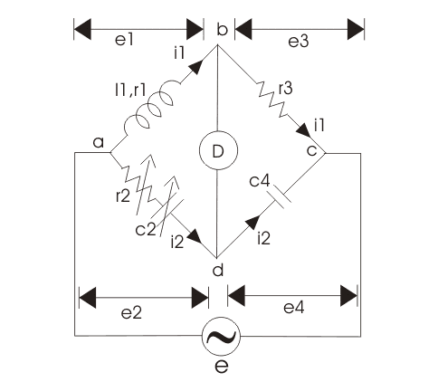
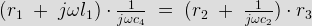
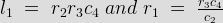
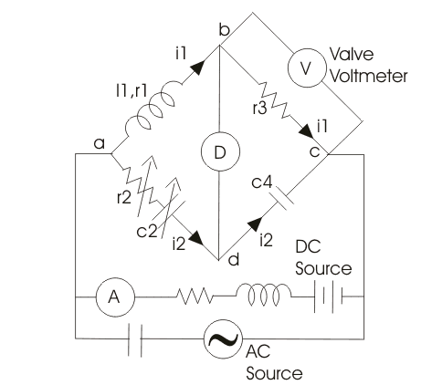
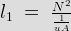
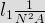

We have various bridges to measure inductor and thus quality factor, like Hay's bridge is highly suitable for the measurement of quality factor greater than 10, Maxwell's bridge is highly suitable for measuring medium quality factor ranging from 1 to 10 and Anderson bridge can be successfully used to measure inductor ranging from few micro Henry to several Henry. So what is the need of Owen's bridge?.
The answer to this question is very easy. We need a bridge which can measure inductor over wide range. The bridge circuit which can do that, is known as Owen's bridge. It is ac bridge just like Hay's bridge and Maxwell bridge which use standard capacitor, inductor and variable resistors connected with ac source for excitation. Let us study Owen's bridge circuit in more detail.
Theory of Owen's Bridge
An Owen's bridge circuit is given below.

The ac supply is connected at a and c point. The arm ab is having inductor having some finite resistance let us mark them r1 and l1. The arm bc consists of pure electrical resistance marked by r3 as shown in the figure given below and carrying the electric current i1 at balance point which is same as the electric current carried by arm ab. The arm cd consists of pure capacitor having no electrical resistance.The arm ad is having variable resistance as well as variable capacitor and the detector is connected between b and d. Now how this bridge works? this bridge measures the inductor in terms of capacitance. Let us derive an expression for inductor for this bridge.
Here l1 is unknown inductance. And c2 is variable standard capacitor.
Now at balance point we have the relation from ac bridge theory that must hold good i.e.

Putting the value of z1, z2, z3 and in above equation we get,

Equating and then separating the real and the imaginary parts we get the expression for l1 and r1 as written below:

Now, there is a need to modify the circuit, in order to calculate the incremental value of inductance. Given below is the modified circuit of Owen's bridge:

A valve voltmeter is placed across the resistor r3. The circuit is fed from both ac and dc source in parallel. The inductor is used to protect dc source from very high alternating electric current and the capacitor is used to block direct electric current from entering the ac source. The ammeter is connected in series with battery to measure the dc component of electric current while the ac component can be measured from the reading of the voltmeter (which is not sensitive to dc) connected across the resistance r3.
Now at the balance point we have, incremental inductor l1 = r2r3c4
also inductor

Therefore incremental permeability is

N is the number of turns, A is the area of flux path, l is the length of flux path, l1 is incremental inductance.
Let us mark drop across arm ab, bc, cd and ad as e1, e3, e4 and e2 respectively as shown in the above figure. This will help us to understand the phasor daigram well.
Owens Bridge
In general the most lagging electric current (i.e. i1) is chosen as reference in order to draw phasor diagram. Current i2 is perpendicular to electric current i1 as shown and drop across inductor l1 is perpendicular to i1 as it is an inductive drop while the drop across capacitor c2 is perpendicular to i2. At balance point e1 = e2 which is shown in the figure, now resultant of all these voltage drops e1, e2, e3, e4 will give e.
Advantages of Owen's Bridge
(1) The for inductor l1 that we have derived above is quite simple and is independent of frequency component.
(2) This bridge is useful for the measurement of inductor over wide range.
Disadvantages of Owen's Bridge
(1) In this bridge we have used variable standard capacitor which is quite expensive item and also the accuracy of this is about only one percent.
(2) As the measuring quality factor increases the value of standard capacitor required increases thus expenditure in making this bridge increases.
 by
by